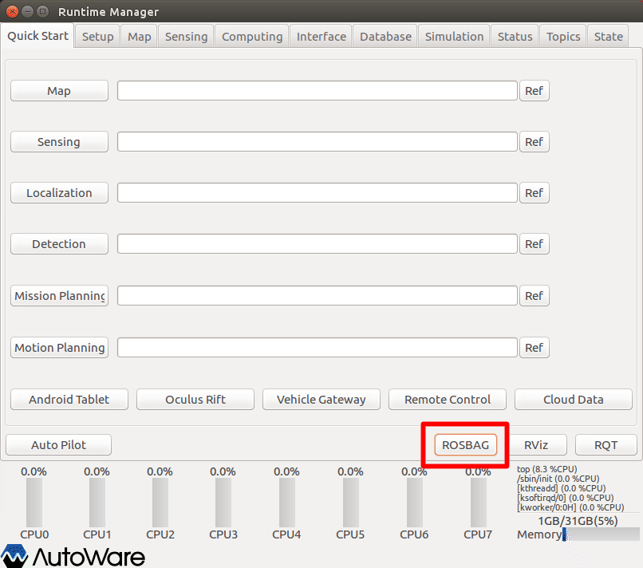
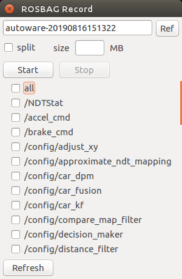

ROSBAGの取得
ROSBAGファイル作成方法を種類ごとに以下に示す。
ターミナルコマンドによる取得
ターミナルコマンド指示による、ROSBAG取得方法の例を以下に示す。
- ターミナルから「rosbag record」コマンドを実行し、ROSBAG取得を行う。
$ rosbag record -a # 全トピック
$ rosbag record -a --split --duration=5m # 全トピック 5分毎分割
※詳細は 「rosbag record --help」 参照
- Ctrl+Cで終了
Autoware Runtime Managerによる取得
Autoware Runtime Managerによる、ROSBAG取得方法の例を以下に示す。

- Autoware Runtime Managerウィンドウの［ROSBAG］ボタンを押下し、［ROSBAG Record］ウィンドウを表示する。

ファイル名、分割サイズ、取得トピックを適宜設定し［Start］ボタンを押下する。
［Stop］ボタン押下で停止する。